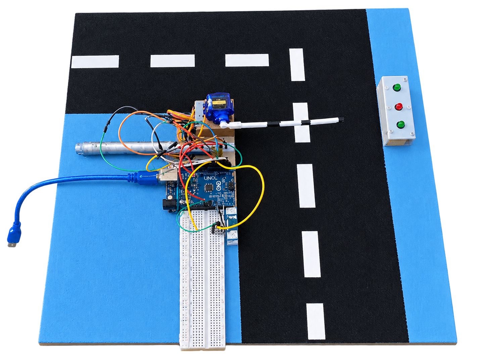
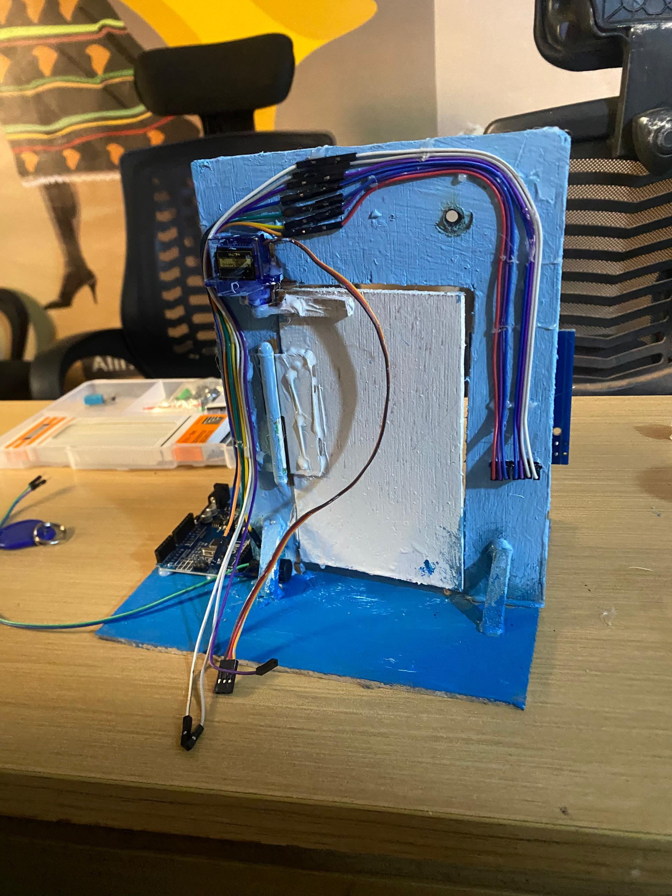

Formation
Développer des compétences numériques et techniques à travers des apprentissages accessibles et pratiques.

Passerelle Tech Kédougou, ou PTK, agit pour le développement des compétences, l'accès au numérique et l'émergence de projets utiles à la jeunesse.
Les domaines ci-dessous constituent le périmètre d'action présenté pour PTK. Les programmes, calendriers et modalités seront précisés au fur et à mesure de leur validation.
Développer des compétences numériques et techniques à travers des apprentissages accessibles et pratiques.
Aider les jeunes à mieux comprendre leurs possibilités d'apprentissage et d'évolution.
Encourager la progression, la confiance et la mise en œuvre d'initiatives concrètes.
Faire découvrir la technologie comme outil de création, de résolution de problèmes et d'émancipation.
Apprendre en fabriquant des prototypes et en reliant théorie, pratique et travail collectif.
Créer des espaces propices à la transmission, aux échanges et à l'engagement des jeunes.
Deux réalisations pédagogiques sont déjà identifiées dans le projet source. Elles sont présentées comme des projets d'apprentissage, sans ajouter de résultats non documentés.

Un projet d'initiation à l'automatisation et à la détection.

Un projet pédagogique autour de l'identification et du contrôle d'accès.
Vous êtes jeune, établissement, organisation ou partenaire potentiel ? Parlons de votre besoin et des formes de collaboration à envisager.